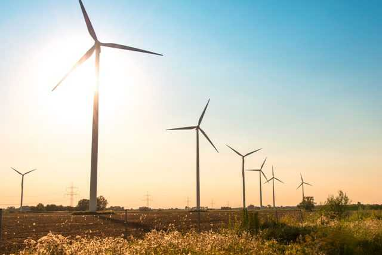
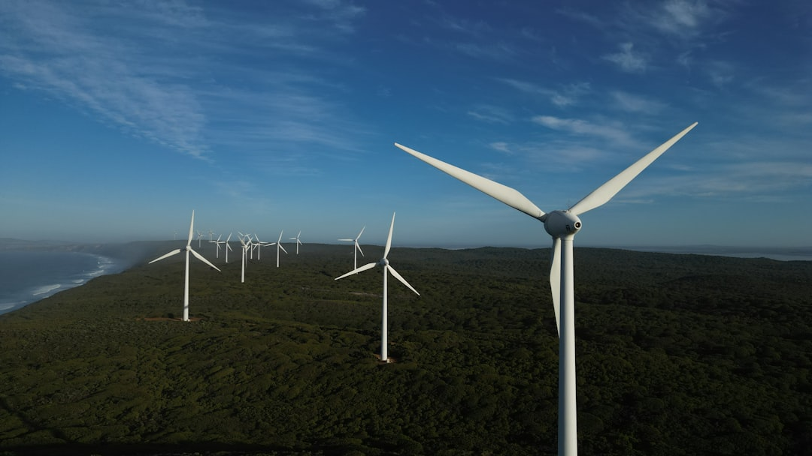

Сучасна енергія вітру для сталого майбутнього України
Дізнатися більшеВітрова електростанція «Приморська» — це сучасний енергетичний комплекс, який забезпечує виробництво екологічно чистої електроенергії для тисяч домогосподарств.
Використання вітру як необмеженого джерела енергії для виробництва електрики
Нульові викиди CO2 та повна відсутність забруднення навколишнього середовища.
Сучасні турбіни з коефіцієнтом корисної дії понад 45%
Забезпечення надійного енергопостачання регіону протягом року

Вітрова електростанція «Приморська» є одним із найбільших об’єктів відновлюваної енергетики України. Вона розташована у прибережній частині Запорізької області, де сприятливі кліматичні умови забезпечують стабільні та потужні вітрові потоки. Проєкт було реалізовано в межах державної стратегії розвитку зеленої енергетики, а будівництво здійснювалося поетапно із застосуванням сучасних технологій і міжнародних стандартів безпеки. Введення станції в експлуатацію стало важливим кроком у зміцненні енергетичної незалежності регіону та країни загалом.
Основне призначення ВЕС «Приморська» — виробництво екологічно чистої електроенергії шляхом використання енергії вітру. Принцип роботи базується на перетворенні кінетичної енергії повітряних мас у механічну, а згодом — у електричну за допомогою генератора. Отримана електроенергія через трансформаторні підстанції подається до загальної енергомережі. Станція оснащена сучасними турбінами великої потужності та автоматизованими системами керування, які забезпечують контроль за швидкістю вітру, навантаженням і технічним станом обладнання.
ВЕС «Приморська» має важливе значення для енергосистеми України, адже сприяє зменшенню викидів парникових газів і зниженню залежності від викопних видів палива. Використання інноваційних технологій дозволяє забезпечувати електроенергією тисячі домогосподарств і підприємств. Перевагами станції є екологічність, відновлюваність ресурсу, довгострокова економічна ефективність та позитивний вплив на розвиток регіону.
| Параметр | Значення |
|---|---|
| Номінальна потужність | ~200 МВт |
| Напруга (всі рівні) | 0,69 кВ / 35 кВ / 110 кВ |
| Рік введення в експлуатацію | 2019–2020 |
| Тип обладнання | Вітрові турбіни з горизонтальною віссю |
| Кількість агрегатів | 50+ вітрових турбін |
| Система управління | Автоматизована система SCADA |
| Режим роботи | Автоматичний (вітер 3–25 м/с) |

Основні об'єкти:
Додаткова інфраструктура: